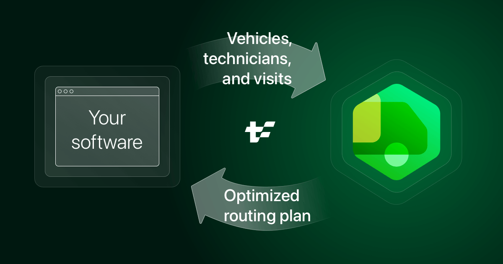
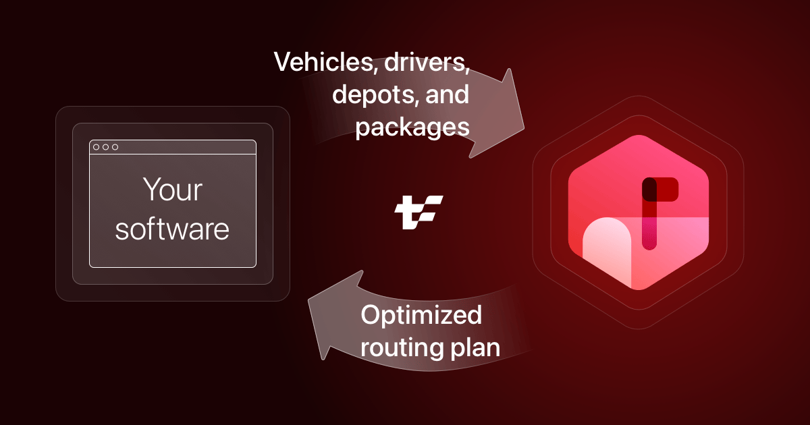
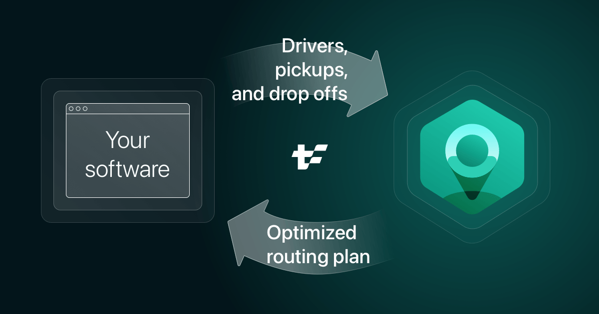

Geoffrey De Smet
Geoffrey De Smet
 Tom Cools
Tom Cools
Ask us anything
(somewhat 🚚 VRP related)
Your software

The Scheduling UI


Automatic verification
Manual scheduling
The feature request
Management
C-suite


ROI?
Gain:
- $2,000 to $4,000
per year
per vehicle
Case in production
Expected: -1% driving time
Result: -25% driving time
50k vehicles
⇒ -$100 million per year
⇒ -10 million kg CO² emission per year
Competitive advantage
They don't want to talk about it
Just a button
How hard can it be?
Research
It has a name
Vehicle Routing Problem
VRP
University
Traveling Salesman Problem
TSP
One Vehicle Routing Problem


1832 Hamilton
1954 Dantzig et al
Brute force fails
n! possibilities
2000 visits =
105735 possibilities
Better algorithms


1972 Karp
"NP-Hard"
How hard can it be?
Pretty hard
60 years of research
1959 - Dantzig et al
CVRP
Capacitated Vehicle Routing Problem


1984 Solomon
VRPTW
Vehicle Routing Problem with Time Windows

Still active today

Solved problem?
When research
datasets
meet reality
CVRP dataset
NAME : X-n101-k25
...
EDGE_WEIGHT_TYPE : EUC_2D
...
NODE_COORD_SECTION
1 365 689 // Euclidean coordinates
2 146 180
3 792 5
4 658 510
5 461 270
6 299 531
7 812 228
8 643 90
...
No latitude and longitude?
Euclidean = flat surface

Haversine = sphere
as the crow flies...
Maps integration

When research
time calculation
meets reality
VRP with Time Windows


In reality
Multi-day planning


VRPTW dataset
C101
VEHICLE
NUMBER CAPACITY
25 200
CUSTOMER
CUST NO. ... READY TIME DUE DATE SERVICE TIME
0 ... 0 1236 0
1 ... 912 967 90 // Are these time?
2 ... 825 870 90
3 ... 65 146 90
4 ... 727 782 90
...
No hours and minutes?
Time calculation is hard
- Timezones
- Daylight Saving Time
- ...
Reality dataset
vehicles: [
{
id: "Vehicle 1",
minStart: "2025-06-02T09:00:00+02:00",
maxEnd: "2025-06-02T17:00:00+02:00",
...
},
{
id: "Vehicle 2",
minStart: "2025-06-02T09:00:00+02:00",
maxEnd: "2025-06-02T17:00:00+02:00",
...
},
...
],
visits: [
{id:"Visit 1", ... serviceDuration: "PT5M"}, // 5 minutes
{id:"Visit 2", ..., serviceDuration: "PT7M"},
...
]
Field service routing
Last mile delivery
Pick-up and delivery routing
Constraints in research
Constraints in reality
Data in research
Data in reality
Introduction


Time windows and opening hours
Shift hours and overtime


Lunch breaks and personal appointments


Skills and skill levels


Dependencies between visits


Technician costs


Multi-vehicle visits


Real-time planning


Recommend time window


Timezones and daylight saving time


TODO quickly mention "build on our open source solver"
| Open source solver | solver.timefold.ai |
|---|
TODO if and only if it fits in the story show it
| Documentation | docs.timefold.ai |
|---|
Free the world of wasteful scheduling
Q & A
| Learn more | timefold.ai |
|---|